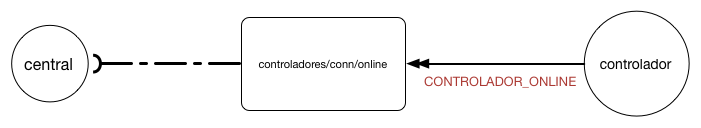

Mantendo a Conectividade Entre os Controladores e a Central
Todo controlador deve manter a central informada dos momentos em que ele está conectado e em que perde conexão com a internet.
Para isso, ao se conectar deve enviar a mensagem CONTROLADOR_ONLINE e deixar como testamento a mensagem CONTROLADOR_OFFLINE. Um controaldor pode testar a conectividade com a central atraves do comando ECHO, a central pode fazer o mesmo com qualquer controlador.
Controlador On-line
Ao se conectar o controlador deve publicar a mensagem CONTROLADOR_ONLINE no tópico /controladores/conn/online para avisar a central que ele pode receber comando comandos remotos. A figura abaixo abaixo apresenta o diagrama de comunicação para essa mensagem:

Especificação da Mensagem
| Campo | Tipo | Obrigatorio |
|---|---|---|
| idControlador | String GUUID | Identificador do Controlador |
| dataHora | Número Longo | SIM |
| versao72c | String | SIM |
{
'dataHora':'1471272798600',
'versao72c': '1.0.0',
'status' : 'ver tabela de status'
}
Controlador Off-line
Ao se conectar o controlador deve publicar a mensagem de testamento CONTROLADOR_OFFLINE que será entregue automaticamente quando ele perder conexão com o broker MQTT. Essa mensagem deve ser publicada no tópico /controladores/conn/offline. A figura abaixo abaixo apresenta o diagrama de comunicação para essa mensagem:

Especificação da Mensagem
| Campo | Tipo | Obrigatorio |
|---|---|---|
| idControlador | String GUUID | Identificador do Controlador |
| dataHora | Número Longo | SIM |
{
'dataHora':'1471272798600'
}
Echo
A mensagem ECHO serve tanto para a central verificar se um controlador está respondendo a comandos quando para um controlador consultar se a central está ativa. O comando ECHO deve devolver exatamente a mensagem que foi enviada.
Quando a central desejar testar um controlador ela deve enviar a mensagem ECHO para tópico /controlador/
Quando o controlador desejar testar a central, ele deve enviar a mensagem ECHO para tópico /central/echo/